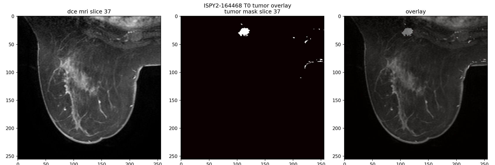
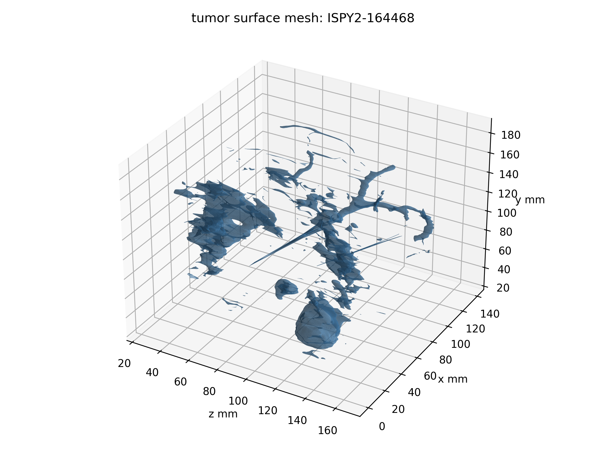
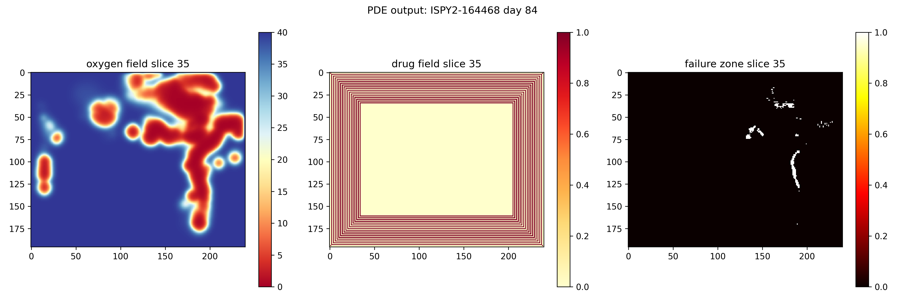
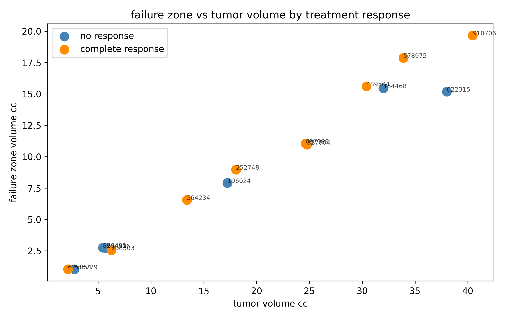
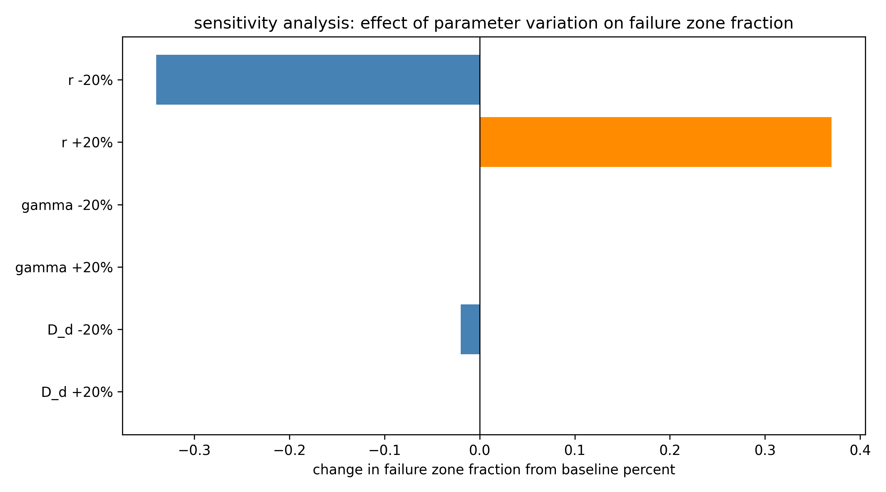
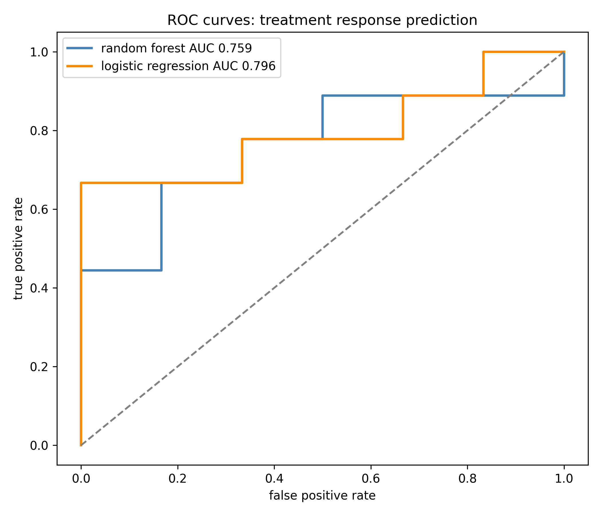
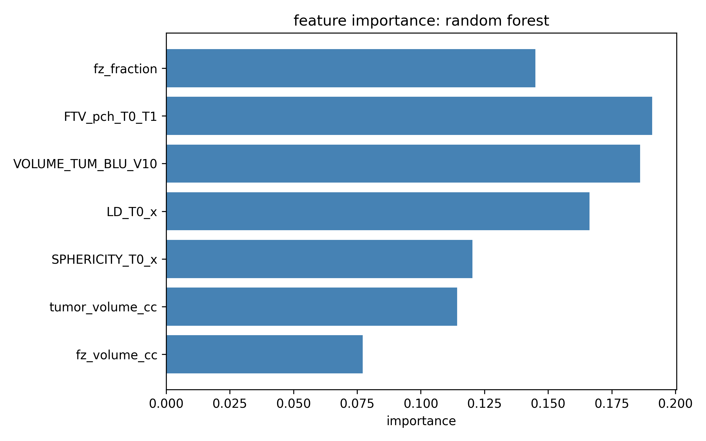

A patient-specific reaction-diffusion model of triple-negative breast cancer, proving that spatial drug-insufficient zones exist before treatment even begins, and locating them directly from a baseline MRI scan.
Drug enters at the tumor boundary ∂Ω and decays over a characteristic length L_d = √(D_d/γ) ≈ 0.29 mm. Every tumor in this cohort was larger than that, so a core region Ω_h never saw a therapeutic dose.
Abstract
Fewer than three in ten TNBC patients see a complete response to standard chemotherapy. The usual explanation is molecular resistance. This paper asks a simpler, geometric question first: does the drug even reach the cell?
Three coupled fields, tumor cell density, oxygen, and drug concentration, evolve by reaction-diffusion over the patient's actual tumor shape, reconstructed from MRI. A failure zone is defined as any point where oxygen and drug both stay below their effective thresholds at once.
Given a tumor's size and shape alone, before a single dose is given, it is possible to prove whether a drug-insufficient region must appear, how large it will get, and the dosing frequency that would make it disappear.
Why geometry matters
Experimentally, cytotoxic drugs are known to penetrate only a few cell layers past the nearest vessel before their concentration drops too low to matter. This paper turns that observation into a length scale that falls directly out of the drug's own diffusion equation.
At steady state, drug supplied at the tumor boundary decays over a characteristic
distance L_d = √(D_d / γ), where D_d is the drug's
diffusivity through tissue and γ is its tissue clearance rate. Any point
further than L_d · log(d_peak / d_thr) from the boundary will sit below
the therapeutic threshold no matter how much drug is given at the surface.
With baseline doxorubicin parameters, that works out to roughly 0.29 mm. The smallest tumor in this cohort had a radius of about 8 mm. Every patient's geometry, by construction, contained a region the drug could not reach.
Drug concentration decays exponentially from the tumor boundary. Past L_d, concentration is already below d_thr — the shaded region receives no effective dose regardless of the dose given at the surface.
Main results
Each proof sketch reduces to a physical argument: a maximum principle, a comparison of sub- and supersolutions, and a contraction on the dosing period.
The coupled system has a unique, bounded, non-negative weak solution on any bounded Lipschitz domain, which is exactly the regularity that an MRI-reconstructed tumor surface actually has.
If a tumor contains a point far enough from its boundary, and its local cell density is high enough to out-consume oxygen diffusion, then a small ball around that point becomes and stays a failure zone.
Compact, convex, low-density tumors are unlikely to satisfy this. Large, irregular tumors with necrotic cores are much more likely to.
Because drug supply is periodic, its long-run concentration converges to a fixed periodic orbit. There is a critical period P* below which that orbit stays above threshold everywhere, and above which a failure zone reappears and grows with P − P*.
From scanner to simulation
360 TNBC patients filtered from I-SPY2 by hormone receptor and HER2 status. 16 had complete baseline DCE-MRI available in TCIA; one produced no usable mesh, leaving 15.
Tumor label identified from the multi-label segmentation DICOM by smallest non-background voxel count. Computed volumes matched the trial's radiomic volumes within 15%.
Marching cubes at isosurface 0.5, then Laplacian smoothing, turns each binary mask into the 3D tumor surface the PDE solver runs on.
Finite-difference solve of all three fields over an 84-day, four-cycle AC-T schedule, on a grid matched to the scan's own voxel spacing.

Fig. 1 — Baseline DCE-MRI for patient ISPY2-164468. Left: raw scan. Centre: extracted binary tumor mask. Right: mask overlaid, confirming it lines up with the contrast-enhancing tissue.
A sphere is the best possible shape for drug delivery: every interior point is as close to the surface as geometry allows. Real TNBC tumors are not spheres. They branch, they have thin connected clusters, they have deep interior folds where the distance to the nearest supplying boundary is far larger than the tumor's nominal radius would suggest.
That is the entire reason a patient-specific geometry, not a generic spherical approximation, is required to compute where a failure zone will actually sit.

Fig. 2 — Reconstructed 3D surface for the same tumor. The irregular, non-convex, branching shape is typical of the cohort, and it is exactly this kind of geometry Theorem 1 is built to handle.
Degree-two finite elements resolve the curved oxygen and drug profiles near the boundary with far fewer nodes than a linear mesh would need. A semi-implicit Crank-Nicolson scheme keeps the nonlinear kill and consumption terms stable, and an adaptive time step tightens automatically around each of the four dosing days.
Simulation output
For patient ISPY2-164468, the failure zone was empty at day 0. It grew to 1,096 voxels by day 21, to 9,394 by day 42, and to 14,211 by day 84, the persistence predicted by Theorem 2 playing out voxel by voxel.
By day 84 the mean oxygen concentration inside the tumor mask had fallen to 0.68 mmHg, far under the 5 mmHg hypoxic threshold, while tissue just outside the tumor stayed near the 40 mmHg boundary value. That contrast is driven by how much oxygen a dense tumor cell population consumes, not by anything about the drug at all.
Sensitivity testing later in the paper shows this is the dominant effect: hypoxia, not drug transport, decides where the failure zone sits.

Fig. 3 — Day 84, middle axial slice. Left: oxygen field (red = deeply hypoxic). Centre: drug field, showing the diffusion gradient from the boundary inward. Right: the computed failure zone in white.
Cohort results
Failure zone fraction ranged from 0.378 to 0.527, mean 0.466. Every tumor in this cohort, complete responder or not, carried a substantial region no dose could reach under the standard three-weekly schedule.
| Patient ID | Tumor vol. (cc) | FZ vol. (cc) | FZ fraction | pCR |
|---|---|---|---|---|
| ISPY2-164468 | 31.99 | 15.46 | 0.483 | 0 |
| ISPY2-196024 | 17.24 | 7.92 | 0.459 | 0 |
| ISPY2-208303 | 6.24 | 2.55 | 0.409 | 1 |
| ISPY2-252748 | 18.06 | 8.97 | 0.497 | 1 |
| ISPY2-489504 | 30.39 | 15.61 | 0.514 | 1 |
| ISPY2-535779 | 2.75 | 1.04 | 0.378 | 0 |
| ISPY2-564234 | 13.41 | 6.56 | 0.489 | 1 |
| ISPY2-578975 | 33.90 | 17.87 | 0.527 | 1 |
| ISPY2-622315 | 38.00 | 15.18 | 0.400 | 0 |
| ISPY2-625854 | 2.14 | 1.04 | 0.487 | 1 |
| ISPY2-697098 | 24.62 | 11.05 | 0.449 | 1 |
| ISPY2-727804 | 24.77 | 10.96 | 0.442 | 1 |
| ISPY2-829491 | 5.45 | 2.76 | 0.506 | 0 |
| ISPY2-910706 | 40.46 | 19.65 | 0.486 | 1 |
| ISPY2-934906 | 5.82 | 2.71 | 0.465 | 0 |
pCR = pathological complete response. Failure zone fraction alone does not separate responders from non-responders, which is expected: response also depends on molecular factors this physical model does not capture.

Fig. 4 — Failure zone volume scales almost linearly with total tumor volume, regardless of eventual response.
The near-linear relationship is itself informative. It says the failure zone fraction is close to a geometric constant for this drug and this disease, set mostly by the mismatch between tumor size and penetration depth, rather than by anything specific to an individual patient's biology.

Fig. 5 — Varying drug diffusivity or decay rate by 20% moves the failure zone fraction by at most 0.02%. Varying proliferation rate moves it by up to 0.37%.
Sensitivity analysis
By day 84, oxygen inside the tumor mask has already collapsed to 0.68 mmHg, far under the 5 mmHg hypoxic threshold. Whether the drug diffuses slightly faster or slower barely changes which voxels are hypoxic, because hypoxia is already the binding constraint almost everywhere.
The practical consequence: a drug engineered to diffuse further or decay slower would not, on its own, close this failure zone. Something that addresses the hypoxia directly, a hypoxia-activated prodrug, or a vascular-normalizing agent given ahead of chemotherapy, is more likely to help.
Does the failure zone predict outcome?
Leave-one-out cross validation on 15 patients, random forest and logistic regression, three feature groups: radiomics, PDE-derived features, and the two combined.
Radiomics dominate on this cohort. Adding PDE features nudges random forest AUC up by 0.018 and logistic regression AUC down by 0.019. Fifteen patients is not enough to call this a real effect either way, but the failure zone fraction still ranks third by feature importance in the ensemble model.

Fig. 6 — ROC curves, combined feature set, leave-one-out cross validation.

Fig. 7 — Random forest feature importance. Failure zone fraction (fz_fraction) sits third, behind early functional tumor volume change and baseline functional tumor volume.
What this could change, and what it can't yet claim
Personalize dosing frequency, not just dose. P* depends on how far the tumor's most interior point sits from its boundary, a distance measurable from a single pre-treatment MRI.
Flag risk at diagnosis, not after cycle one. The PDE failure zone fraction needs only the baseline scan. Current radiomic predictors need a follow-up scan after the first treatment cycle to work well.
Target hypoxia, not drug transport. The sensitivity analysis suggests reformulating a drug for better diffusion would not close this gap. Treating the oxygen problem directly likely would.
Limitations: single homogeneous cell population, fixed tumor geometry over the full 84-day course, literature-derived rather than per-patient transport parameters, and a 15-patient cohort too small to validate any clinical claim on its own. Parameters were calibrated to doxorubicin and may need recalibration for paclitaxel or carboplatin.